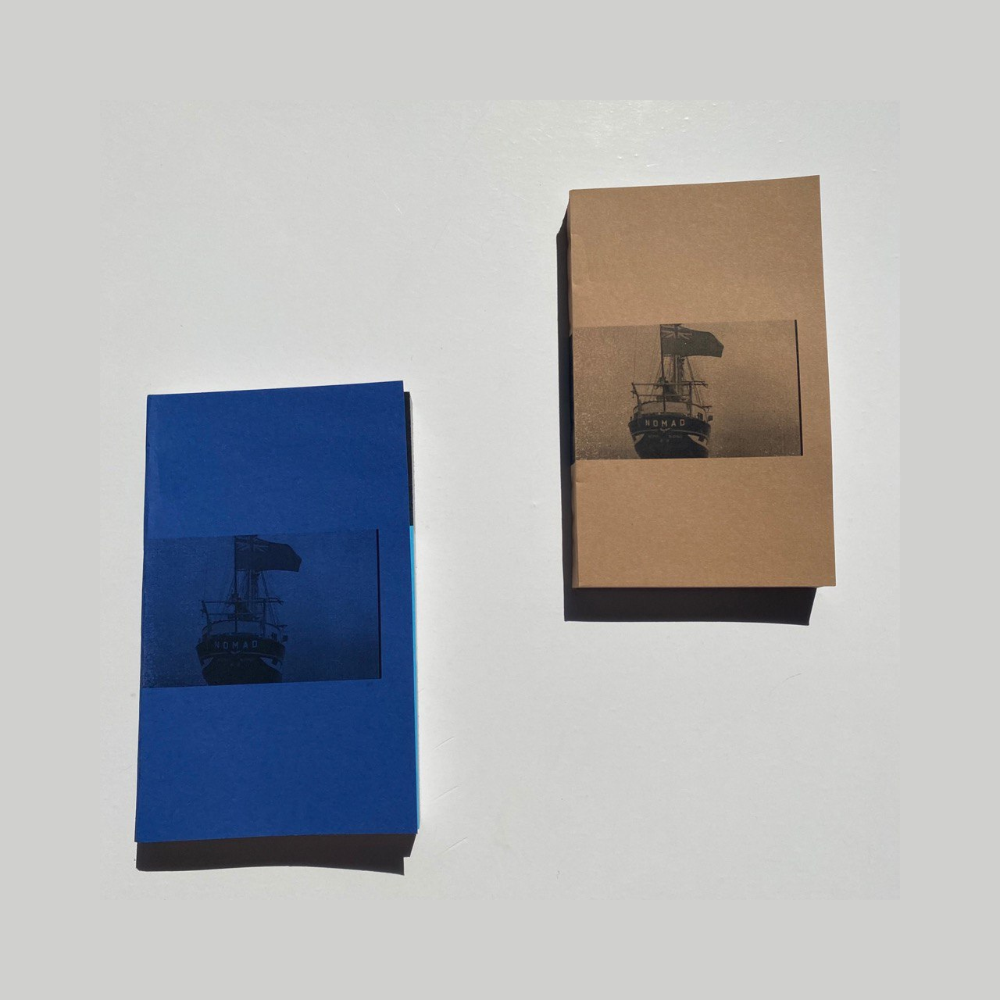

Books Are Not Boxes - Nomad

For this project I have made a small (111 x 181 mm; 200pp) paperback books based on the film ‘Nomad’ by Partick Tam. For me the most inmortant things in the film were Music/Speech and People. So with different colored pages, I showed the duration of the music and almost all the photographs contain people.
The final outcome
The making process
This to that - The Cat's Paw
Text Text Text Text Text Text Text Text Text Text Text Text Text Text Text Text Text Text Text Text Text Text Text Text Text Text Text Text Text Text Text Text Text Text Text Text Text Text Text Text Text Text Text Text Text Text Text Text Text Text Text Text Text Text Text Text Text Text Text Text Text Text Text Text Text Text Text Text Text Text Text Text Text Text Text Text Text Text Text Text Text Text
Հիշու՞մ ես...
( Do you remember...?)

The book contains the process of unforgetting a series of found forgotten objects.